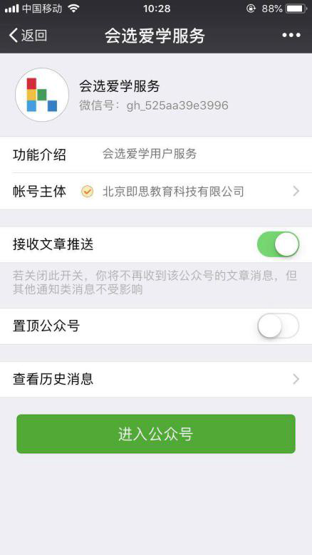
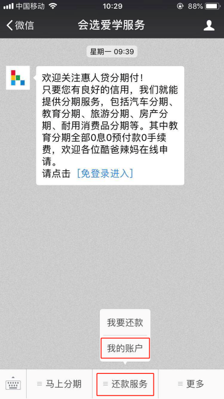
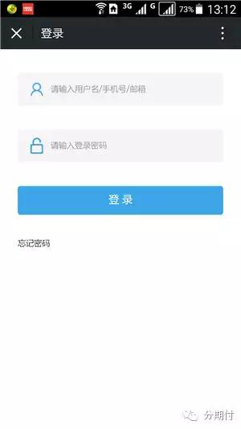
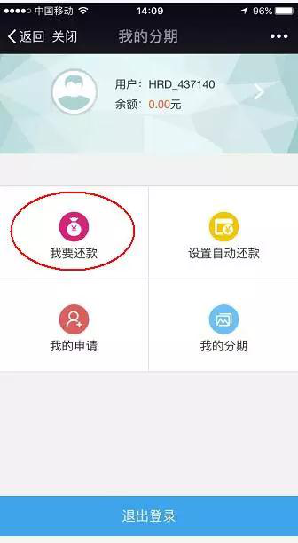
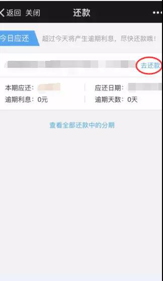
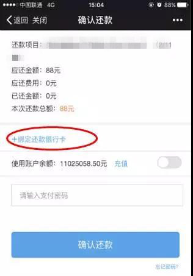
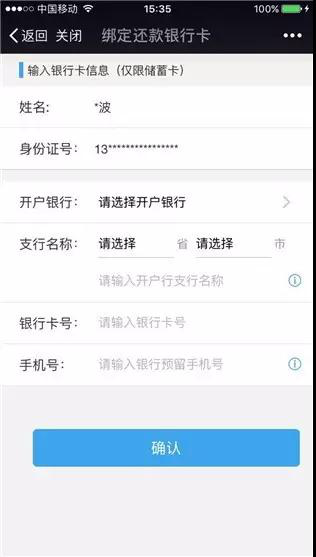
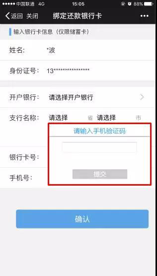
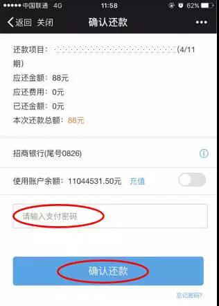
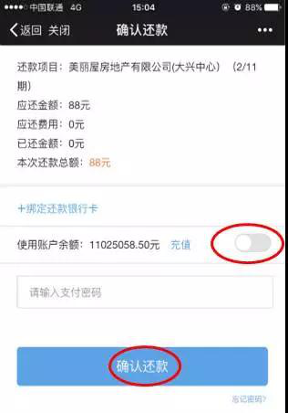

1.在微信“添加朋友”里面搜索”会选爱学服务“，并关注；
2.点击下面“还款服务”--"我的账户”（也可以点击“我要还款”，只能看到当月应还未还账单）；
3.输入用户名/手机号/进行登陆（手机号是分期申请时填写的手机号码，初次登录密码我们将会以短信的形式发送至申请手机号码上，请注意查收）；
4.进入页面，点击“我要还款”；
5.进入 “还款”页面，点“去还款”，在进入“确认还款”页面后，点“绑定还款银行卡”；
 6.进入“绑定还款银行卡”页面（记住一定是储蓄卡哦），输入银行卡信息，点“确认”；
7.在“请输入手机验证码”位置输入验证码，再点“提交”，绑完卡完成；
8.进入“确认还款”页面，输入“支付密码”，点“确认还款”，还款就完成啦~
9.若使用账户余额足够本次还款，开启右侧充值（显示绿色），直接点击“确认还款”；
